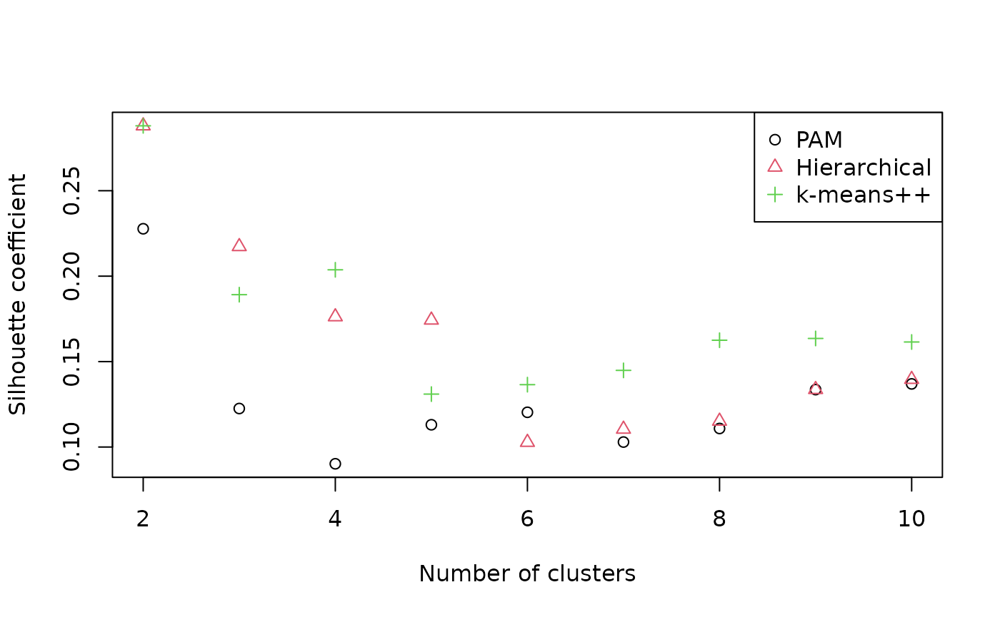
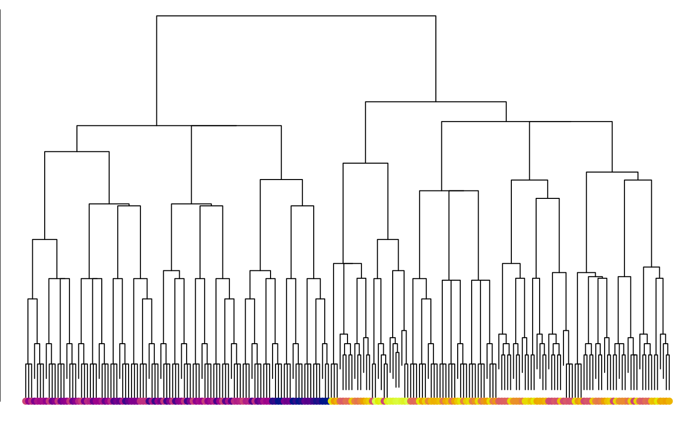
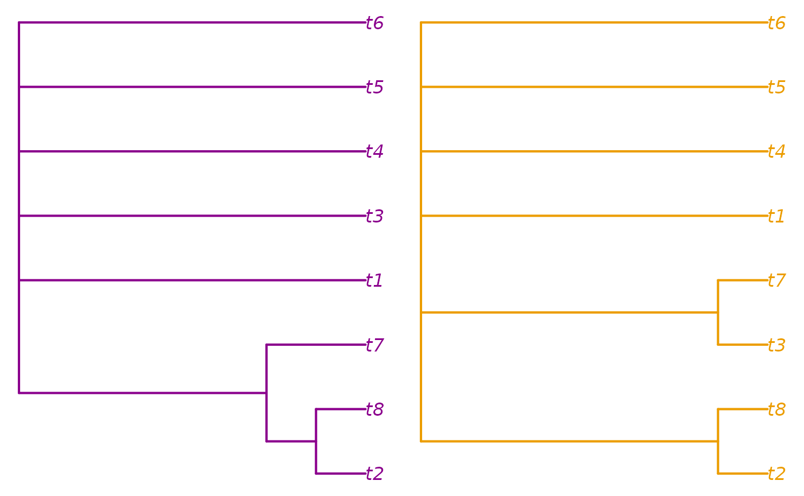

It can be instructive to visualize the distribution of trees in a spatial ‘landscape’. This can be a helpful means to address whether discrete islands of trees exist, or whether analytical runs have converged. Such analysis is relatively simple to conduct, but a few common oversights can mislead interpretation.
Tree space analysis via user interface
You can conduct treespace analysis simply using the Shiny app that comes with the ‘TreeDist’ R package. Simply install R or RStudio, then copy the code below into the R command line:
install.packages('devtools') devtools::install_github('ms609/TreeDist') TreeDist::TreeSpace()
This will allow you to conduct and evaluate basic tree space projections from tree lists saved in most common file formats; see an outline of the basic functionality. To avoid misinterpreting tree space, it’s worth having a broad idea of what an analysis involves, and some potential pitfalls.
Avoiding common pitfalls in tree space analysis
Here’s an example analysis of a series of 200 trees from an ordered list. The list corresponds to a mixed-base representation of trees (see TreeTools::as.TreeNumber), so is expected to contain some structure as we jump from one ‘class’ of tree to another. Let’s see whether we can visualize and corroborate this structure.
First we’ll generate the trees, and load some colours with which we might identify them.
library('TreeTools', quietly = TRUE, warn.conflicts = FALSE) treeNumbers <- c(1:220) trees <- as.phylo(treeNumbers, 8) spectrum <- viridisLite::plasma(220) treeCols <- spectrum[treeNumbers]
Using a suitable distance metric
Now we need to calculate the distance between each pair of trees in our list. The choice of distance metric is important (Smith, 2021). The widely used Robinson–Foulds distance is, unfortunately, unsuitable for tree space analysis. The clustering information distance (Smith, 2020) is a reliable alternative that is fast to calculate:
library('TreeDist') distances <- ClusteringInfoDistance(trees)
The reader is encouraged to repeat the exercise with other distances:
distances <- RobinsonFoulds(trees) distances <- PhylogeneticInfoDistance(trees) distances <- as.dist(Quartet::QuartetDivergence( Quartet::ManyToManyQuartetAgreement(trees), similarity = FALSE))
Projecting distances
Then we need to reduce the dimensionality of these distances. We’ll start out with a 12-dimensional projection; if needed, we can always drop higher dimensions.
Principal components analysis is quick and performs very well:
projection <- cmdscale(distances, k = 12)
Alternative projection methods do exist, and sometimes give slightly better projections. isoMDS() performs non-metric multidimensional scaling (MDS) with the Kruskal-1 stress function (Kruskal, 1964):
kruskal <- MASS::isoMDS(distances, k = 12) projection <- kruskal$points
whereas sammon(), one of many metric MDS methods, uses Sammon’s stress function (Sammon, 1969):
sammon <- MASS::sammon(distances, k = 12)
projection <- sammon$pointsThat’s a good start. It is tempting to plot the first two dimensions arising from this projection and be done:
par(mar = rep(0, 4)) plot(projection, asp = 1, # Preserve aspect ratio - do not distort distances ann = FALSE, axes = FALSE, # Don't label axes: dimensions are meaningless col = treeCols, pch = 16 )

Identifying clusters
A quick visual inspection suggests at least two clusters, with the possibility of further subdivision of the brighter trees. But visual inspection can be highly misleading (Smith, 2021). We must take a statistical approach. A combination of partitioning around medoids and hierarchical clustering with minimax linkage will typically find a clustering solution that is close to optimal, if one exists (Smith, 2021).
possibleClusters <- 2:10 pamClusters <- lapply(possibleClusters, function (k) cluster::pam(distances, k = k)) pamSils <- vapply(pamClusters, function (pamCluster) { mean(cluster::silhouette(pamCluster)[, 3]) }, double(1)) bestPam <- which.max(pamSils) pamSil <- pamSils[bestPam] pamCluster <- pamClusters[[bestPam]]$cluster hTree <- protoclust::protoclust(distances) hClusters <- lapply(possibleClusters, function (k) cutree(hTree, k = k)) hSils <- vapply(hClusters, function (hCluster) { mean(cluster::silhouette(hCluster, distances)[, 3]) }, double(1)) bestH <- which.max(hSils) hSil <- hSils[bestH] hCluster <- hClusters[[bestH]] plot(pamSils ~ possibleClusters, xlab = 'Number of clusters', ylab = 'Silhouette coefficient', ylim = range(c(pamSils, hSils))) points(hSils ~ possibleClusters, pch = 2) legend('topright', c('PAM', 'Hierarchical'), pch = 1:2)

Silhouette coefficients of < 0.25 suggest that structure is not meaningful; > 0.5 denotes good evidence of clustering, and > 0.7 strong evidence (Kaufman & Rousseeuw, 1990). The evidence for the visually apparent clustering is not as strong as it first appears. Let’s explore our two-cluster hierarchical clustering solution anyway.
cluster <- hClusters[[2 - 1]]
We can visualize the clustering solution as a tree:
class(hTree) <- 'hclust' par(mar = c(0, 0, 0, 0)) plot(hTree, labels = FALSE, main = '') points(seq_along(trees), rep(1, length(trees)), pch = 16, col = spectrum[hTree$order])

Another thing we may wish to do is to take the consensus of each cluster:
par(mfrow = c(1, 2), mar = rep(0.2, 4)) col1 <- spectrum[mean(treeNumbers[cluster == 1])] col2 <- spectrum[mean(treeNumbers[cluster == 2])] plot(consensus(trees[cluster == 1]), edge.color = col1, edge.width = 2, tip.color = col1) plot(consensus(trees[cluster == 2]), edge.color = col2, edge.width = 2, tip.color = col2)

In this case, we don’t learn much, though trees in one cluster are united by the position of t7.
Validating a projection
Now let’s evaluate whether our plot of tree space is representative. First we want to know how many dimensions are necessary to adequately represent the true distances between trees. We hope for a trustworthiness × continuity score of > 0.9 for a usable projection, or > 0.95 for a good one.
txc <- vapply(1:12, function (k) { newDist <- dist(projection[, seq_len(k)]) ProjectionQuality(distances, newDist, 10)['TxC'] }, 0) plot(txc, xlab = 'Dimension') abline(h = 0.9, lty = 2)

We are going to need at least five dimensions to adequately represent the distances between trees.
To help establish visually what structures are more likely to be genuine, we might also choose to calculate a minimum spanning tree:
mstEnds <- MSTEdges(distances)
Let’s plot the first five dimensions of our tree space, highlighting the convex hulls of our clusters:
plotSeq <- matrix(0, 5, 5) plotSeq[upper.tri(plotSeq)] <- seq_len(5 * (5 - 1) / 2) plotSeq <- t(plotSeq[-5, -1]) plotSeq[c(5, 10, 15)] <- 11:13 layout(plotSeq) par(mar = rep(0.1, 4)) for (i in 2:5) for (j in seq_len(i - 1)) { # Set up blank plot plot(projection[, j], projection[, i], ann = FALSE, axes = FALSE, frame.plot = TRUE, type = 'n', asp = 1, xlim = range(projection), ylim = range(projection)) # Plot MST apply(mstEnds, 1, function (segment) lines(projection[segment, j], projection[segment, i], col = "#bbbbbb", lty = 1)) # Add points points(projection[, j], projection[, i], pch = 16, col = treeCols) # Mark clusters for (clI in unique(cluster)) { inCluster <- cluster == clI clusterX <- projection[inCluster, j] clusterY <- projection[inCluster, i] hull <- chull(clusterX, clusterY) polygon(clusterX[hull], clusterY[hull], lty = 1, lwd = 2, border = '#54de25bb') } } # Annotate dimensions plot(0, 0, type = 'n', ann = FALSE, axes = FALSE) text(0, 0, 'Dimension 2') plot(0, 0, type = 'n', ann = FALSE, axes = FALSE) text(0, 0, 'Dimension 3') plot(0, 0, type = 'n', ann = FALSE, axes = FALSE) text(0, 0, 'Dimension 4')

Our clusters, so distinct in dimension 1, overlap strongly in every other dimension. The fact that the minimum spanning tree moves between clusters also underlines the fact that they are not as well defined as they appear by eye.
Note that cluster membership, as well as the precise shape of treespace, is a function of the tree distance metric. The phylogenetic information distance recovers a different pair of clusters, highlighting the dangers of interpreting a two-dimensional treespace plot:

References
Kaufman, L., & Rousseeuw, P. J. (1990). Partitioning around medoids (Program PAM). In Wiley Series in Probability and Statistics. Finding groups in data: An introduction to cluster analysis (pp. 68–125). John Wiley & Sons, Ltd. doi: 10.1002/9780470316801.ch2
Kruskal, J. B. (1964). Multidimensional scaling by optimizing goodness of fit to a nonmetric hypothesis. Psychometrika, 29(1), 1–27. doi: 10.1007/BF02289565
Sammon, J. (1969). A nonlinear mapping for data structure analysis. IEEE Transactions on Computers, C-18(5), 401–409. doi: 10.1109/T-C.1969.222678
Smith, M. R. (2020). Information theoretic Generalized Robinson-Foulds metrics for comparing phylogenetic trees. Bioinformatics, online ahead of print. doi: 10.1093/bioinformatics/btaa614
Smith, M. R. (2021). The importance of methodology when analysing landscapes of phylogenetic trees. Forthcoming.